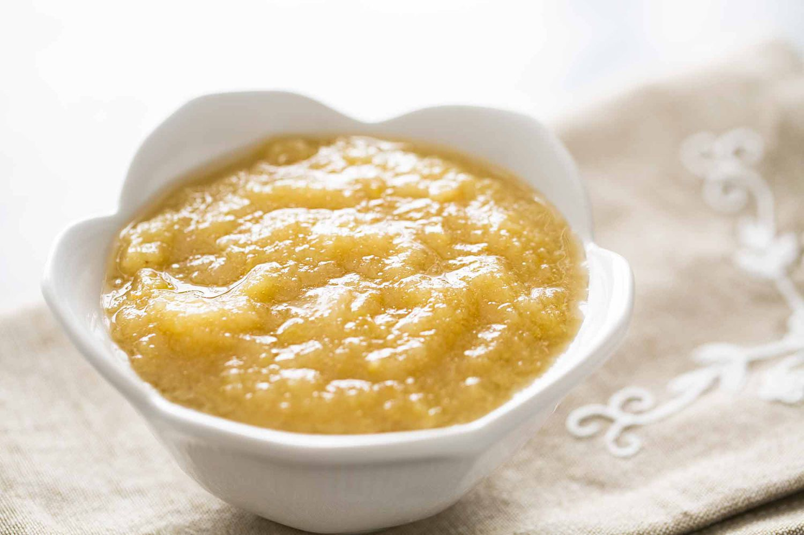

Applesauce

How To Make Applesauce
Apple sauce is what the Harfoots made when the had apples.
Ingredients
- 3 Bramley apples, peeled, cored and sliced
- 50g caster sugar
- 50g butter
Steps
- Step 1 - Tip all the ingredients into a pan, then cover with a lid. , stirring occasionally,
- Step 2 - Place the pan on a low heat
- Step 3 - Do this for about 15 mins until the apples break down into a purée.
- Step 4 - Stir to knock out any lumps, then tip into a serving dish.